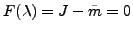
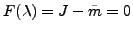
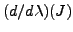
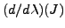

We consider the ill-posed system of equations , , , for which an approximate solution is to be obtained by solving the regularized weighted least squares problem
Theorem
Let
, where the elements
in
 and the elements in
are each independent and
identically distributed. If
and
are
symmetric positive definite (SPD) weighting matrices on the data and
model errors, resp., then for large
and the elements in
are each independent and
identically distributed. If
and
are
symmetric positive definite (SPD) weighting matrices on the data and
model errors, resp., then for large  , the minimium value of is a
random variable which follows a distribution with
, the minimium value of is a
random variable which follows a distribution with  degrees of
freedom.
degrees of
freedom.
Specifically, the result suggests that in the limit, for statistical
measurements, the minimum value of should be a random
variable with approximately  degrees of freedom. In
[3] we extended this result for the more general
Tikhonov regularization term
degrees of freedom. In
[3] we extended this result for the more general
Tikhonov regularization term
 ,
obtaining that the functional has fewer degrees of freedom,
, where
. Mead used the
first result to design an algorithm in which one finds the regularization
weighting matrix such that the obtained minimum of has
,
obtaining that the functional has fewer degrees of freedom,
, where
. Mead used the
first result to design an algorithm in which one finds the regularization
weighting matrix such that the obtained minimum of has  degrees of
freedom within some given confidence interval. But in the special case
where the inverse covariance matrix
degrees of
freedom within some given confidence interval. But in the special case
where the inverse covariance matrix
 on the model
parameters
on the model
parameters
 is limited to be a diagonal scaling of the
identity
, the problem simplifies to the
determination of the scalar regularization parameter
. For this case
is limited to be a diagonal scaling of the
identity
, the problem simplifies to the
determination of the scalar regularization parameter
. For this case  can be
found using a scalar Newton method for solving
. Moreover, using the generalized singular
value decomposition, Mead and Renaut [3] showed that
can be
found using a scalar Newton method for solving
. Moreover, using the generalized singular
value decomposition, Mead and Renaut [3] showed that  is monotonic in
is monotonic in  , and thus when a solution exists, it is unique.
Their results validated the viability of the use of the Newton method to
obtain good estimates for
, and thus when a solution exists, it is unique.
Their results validated the viability of the use of the Newton method to
obtain good estimates for  , completely consistent with values
obtained by generalized cross-validation, and unbiased predictive risk
algorithms, see for example [5]. Indeed the method is far
cheaper than these methods, only requiring a few steps of the Newton
iteration, as compared to these other methods and to the L-curve, all of
which usually involve evaluating the relevant functionals for many more
values of
, completely consistent with values
obtained by generalized cross-validation, and unbiased predictive risk
algorithms, see for example [5]. Indeed the method is far
cheaper than these methods, only requiring a few steps of the Newton
iteration, as compared to these other methods and to the L-curve, all of
which usually involve evaluating the relevant functionals for many more
values of  . All of these methods, however, are limited in
applicability for large scale problems, if they are based on the use of
the generalized singular value decomposition (GSVD) ( of singular value
decomposition when appropriate) for obtaining updates of the solutions
for varying
. All of these methods, however, are limited in
applicability for large scale problems, if they are based on the use of
the generalized singular value decomposition (GSVD) ( of singular value
decomposition when appropriate) for obtaining updates of the solutions
for varying  . Additionally, the approach appears to not
be relevant when there is no information on covariance structure on the
data
.
. Additionally, the approach appears to not
be relevant when there is no information on covariance structure on the
data
.
In this work we address these issues. The difficulty with lack of
statistical information on
, is easily addressed by the
realization that the lack of the covariance matrix prevents the whitening
of the noise in the data, so that the number of degrees of freedom is
reduced. Fortunately, the implementation of the algorithm explicitly
provides the number of degrees of freedom so that can be
reestimated. For the development of efficient implementations of the
estimate for the regularization parameter  , so as to
extend the approach for large scale problems, we consider two directions
which avoid the GSVD. For image deblurring applications, operations with
the matrix
, so as to
extend the approach for large scale problems, we consider two directions
which avoid the GSVD. For image deblurring applications, operations with
the matrix  are equivalent to convolutions which are more efficiently
handled in the Fourier domain than in space. For a given
are equivalent to convolutions which are more efficiently
handled in the Fourier domain than in space. For a given  an
exact minimization of is found using the benefits of fast
Fourier transforms, see for example [5]. The Newton algorithm
also requires then the evaluation of the derivative

which for exact solutions
an
exact minimization of is found using the benefits of fast
Fourier transforms, see for example [5]. The Newton algorithm
also requires then the evaluation of the derivative

which for exact solutions
 can be seen to easily
simplify, and the GSVD is avoided. For more general problems, where the
FFT approach is not relevant, it is appropriate to consider the use of
inexact solves for minimizing
, and to replace the Newton
method by the secant algorithm for rootfinding. Theoretical
considerations and numerical validations describing the new algorithms
will be discussed. We will use not only examples from the test set of
Hansen [1], but also restoration of real seismic deep
earthquake signals.
can be seen to easily
simplify, and the GSVD is avoided. For more general problems, where the
FFT approach is not relevant, it is appropriate to consider the use of
inexact solves for minimizing
, and to replace the Newton
method by the secant algorithm for rootfinding. Theoretical
considerations and numerical validations describing the new algorithms
will be discussed. We will use not only examples from the test set of
Hansen [1], but also restoration of real seismic deep
earthquake signals.